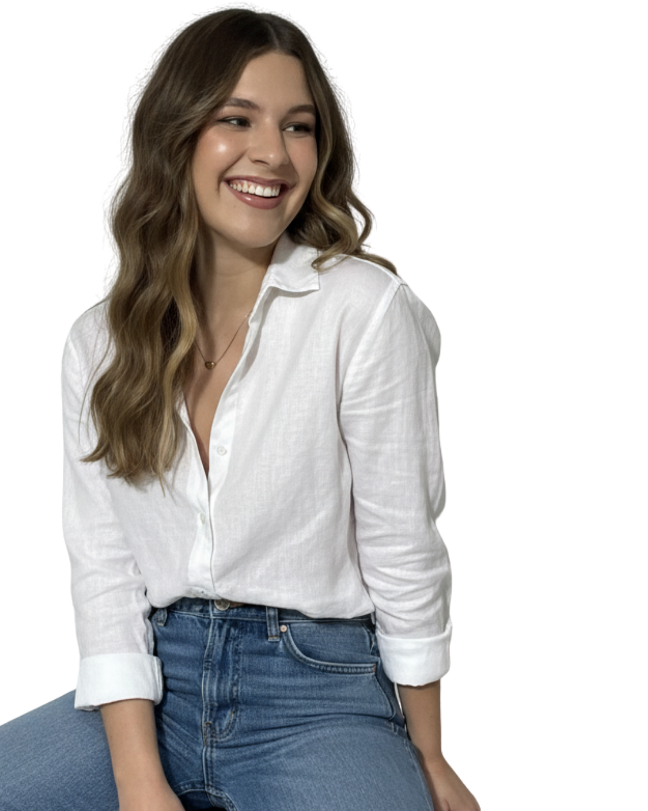
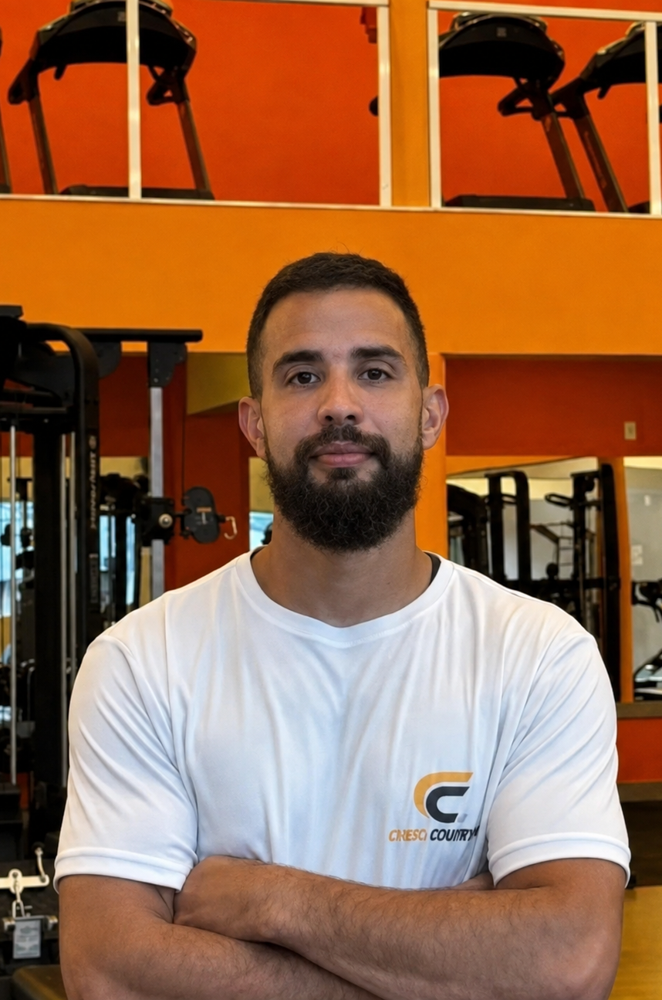
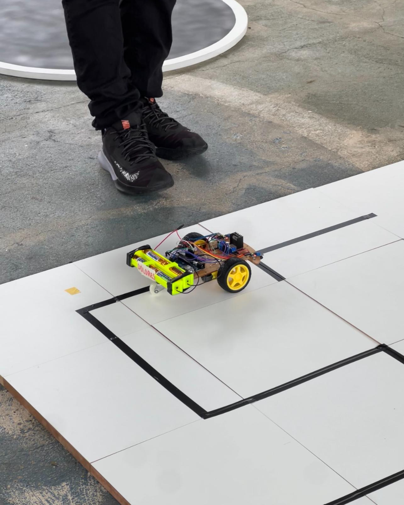
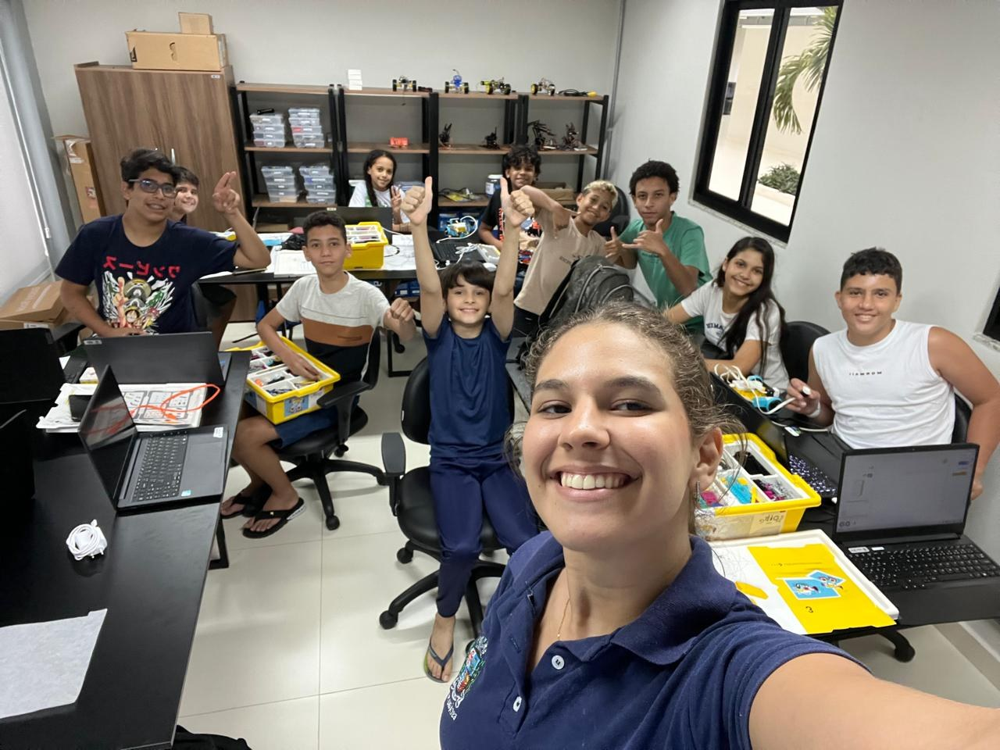
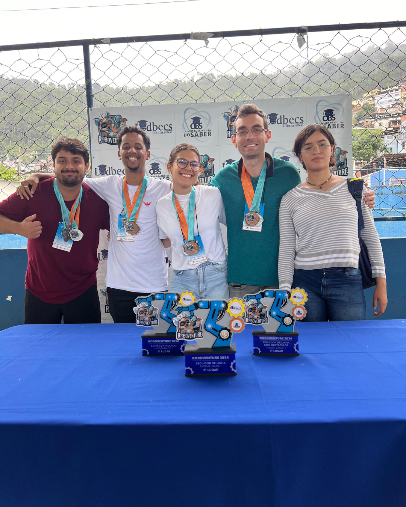
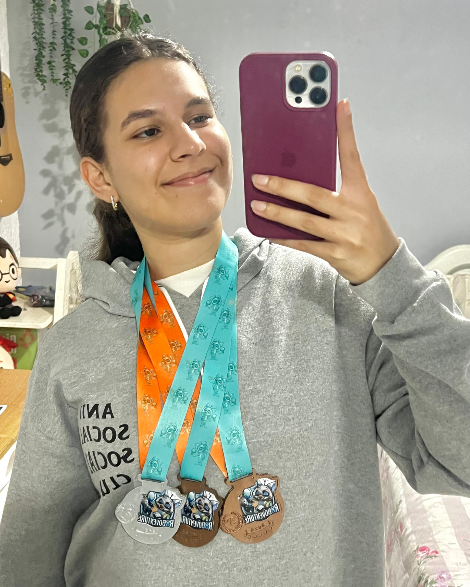

Uma vitrine digital pensada para organizar produtos, categorias e caminhos de navegação de uma loja.
LAB · PORTFÓLIO · ANGRA DOS REIS, RJ · 2026
Entre sonhos e Sistemas.
Sou Letícia Amorim Barbosa. Transito entre suporte técnico, frontend, UX, IA e robótica sempre tentando transformar ideia em algo que funciona de verdade.
- Frontend
- IA
- Robótica
- UX/UI

frontend · IA · UX · robótica
SOBRE MIM
Um pé na
estética.
Outro na
tecnologia.
A tecnologia entrou na minha vida antes de virar profissão. Começou em feiras de ciências, peças desmontadas e vontade de entender o que fazia cada coisa funcionar. Hoje, essa mesma curiosidade aparece em interfaces, soluções de suporte, robôs e protótipos.
Trabalho com suporte técnico na Zarpa.ai, sigo desenvolvendo projetos próprios e aprendo melhor quando posso testar, ajustar e tentar de novo. O que me move ainda é transformar uma pergunta em algo palpável.
PROJETOS SELECIONADOS
Projetos que
eu construí.
Alguns trabalhos que misturam desenvolvimento web, interface, organização de informação e robótica.

Sistema de gestão para personal trainers, com criação de treinos personalizados, acompanhamento de alunos, calendário de atividades e chat integrado entre profissional e aluno.

Robô autônomo desenvolvido unindo programação, eletrônica e estratégia para competições de robótica.
VIVÊNCIA PRÁTICA
Tecnologia
também é troca.
A robótica é uma parte importante do meu percurso porque aproxima lógica, construção e gente. Dar aula me ajudou a explicar melhor, organizar ideias e enxergar tecnologia por um lado mais humano.

PERCURSO
Onde coloquei
a mão na massa.
A experiência passa por pessoas, sistemas, eletrônica, educação e resolução de problemas — e não cabe em uma única caixinha.
Zarpa.ai
2025 — agora
Auxiliar de Suporte TécnicoAtendimento a usuários, resolução de problemas, operações na Zoop e a ponte diária entre pessoas, sistemas e time técnico.
- Atendimento e suporte técnico a usuários
- Apoio em problemas de sistemas e tecnologia
- Cadastros e operações na Zoop
- Contribuição em agente de IA e design visual de páginas
Parque Tecnológico do Mar
2024 — 2025
Estagiária de TecnologiaProjetos de tecnologia e inovação que aproximaram programação, automação, desenvolvimento web e iniciativas educacionais.
- Projetos de tecnologia e inovação
- Programação, automação e desenvolvimento web
- Projetos educacionais e tecnológicos
Eletronuclear
2022 — 2023
Eletricista Industrial — Jovem AprendizVivência com manutenção elétrica, sistemas eletrônicos, segurança e rotina industrial — uma base prática para olhar tecnologia fora da tela.
- Manutenção elétrica industrial
- Sistemas elétricos e eletrônicos
- Eletrônica, segurança e rotina industrial
Robótica competitiva e aulas
2024 - agora
Criação, teste e ensinoConstrução de robôs, participação em competições e atividades de lógica e modelagem 3D com crianças e adolescentes.
- Ensino de lógica e tecnologia
- Projetos com robôs
- Organização de atividades práticas
REGISTROS
Alguns pedaços
da caminhada.


FORMAÇÃO E REPERTÓRIO
Ensino médio
concluído e curso
técnico em
andamento no
CPET.
Esse é um dos pontos de partida do meu interesse por tecnologia aplicada, lógica, prática e resolução de problemas.
ENSINO MÉDIO
CURSO TÉCNICO EM ANDAMENTO
Desenvolvimento web
HTML5, CSS e Web Design
UX
Pesquisa com usuários, design centrado no usuário e avaliação de projetos
RPA
Automação de processos e Python
IA generativa
Prompt engineering, uso ético de IA e aplicações práticas
Programação em robótica
Lógica de programação, eletrônica e prototipagem
Eletricista industrial
Eletrônica, manutenção elétrica, NR-10 e acionamentos industriais
ABERTA A CONVERSA · 2026
Vamos
criar juntos?
Aberta a estágios, oportunidades profissionais e projetos colaborativos. Se quiser conversar, trocar uma ideia ou construir algo comigo, me chama no privado :)